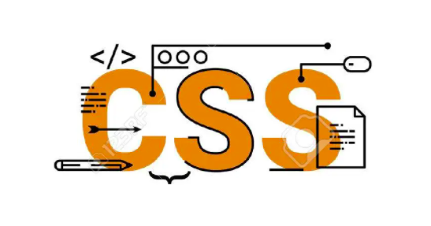
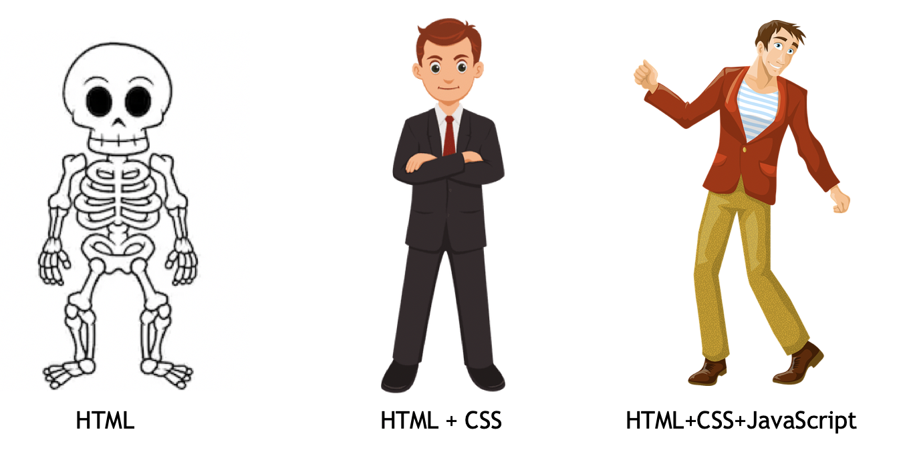

Pendahuluan HTML

Ketika berselancar di Internet, hampir tiap konten yang kita lihat memiliki layout atau susunan konten yang bermacam-macam. Ada yang memuat tulisan, gambar, link, sampai dengan video. Taukah kamu bahwa semua konten yang tersusun dalam layout tersebut, sebagian besar dibuat menggunakan HTML? Lalu apakah HTML itu?
# Apa itu HTML ?
HTML, adalah singkatan dari HyperText Markup Language. HTML berisi serangkaian markup berupa text yang berfungsi untuk memberi tahu pada browser, seperti apa kerangka atau konten dari website itu akan ditampilkan. Informasi yang akan diberikan pada browser diwujudkan dalam HTML tags, yang masing-masing memiliki fungsi spesifik, terstruktur, dan sistematis. Perlu kita garisbawahi bahwa HTML ini adalah Bahasa Markup, beda dengan Bahasa Pemrograman. Mengapa berbeda? Ini dikarenakan apa yang ada dalam HTML hanyalah tags-tags yang berwujud text, dengan demikian HTML tidak memiliki komponen seperti variable, fungsi, dan tipe data, serta tidak memiliki kemampuan untuk melakukan operasi logika, perulangan, conditional, dan lain sebagainya sebagaimana yang dimiliki oleh bahasa pemrograman pada umumnya.
# Kisah Dibalik HTML

Saat itu tahun 1980 ketika fisikawan Tim Berners-Lee mengusulkan ide tentang sistem di mana para peneliti di CERN dapat menggunakan dan berbagi dokumen. Kemudian pada tahun 1989, ia menyusun pembaruan yang mengusulkan Sistem Hypertext berbasis Internet untuk komputer global. Ide Tim Berners-Lee adalah model di mana pengguna dapat menavigasi dari satu set informasi di komputer ke set informasi lain di komputer lain.
Catatan Sistem hypertext adalah jaringan dokumen teks yang terhubung menggunakan hyperlink dan dapat dilompati dari satu dokumen ke dokumen lain menggunakan beberapa tindakan seperti klik mouse.Tim Berners-Lee menulis perangkat lunak browser dan server untuk HTML pada tahun 1990. Pada tahun yang sama, Berners-Lee dengan seorang insinyur sistem data lainnya berkolaborasi dan meminta dana tetapi CERN tidak menerima proyek tersebut. Pada akhir tahun 1991 Tim Berner-Lee mempublikasikan deskripsi HTML dalam sebuah dokumen yang disebut Tag HTML . Versi pertama HTML memiliki 18 elemen yang sebagian besar dipengaruhi oleh SGML (Standard Generalized Markup Language) kecuali hyperlink . 11 dari 18 elemen tersebut ada di HTML4. Karakteristik dasar untuk setiap elemen didefinisikan di browser dan karakteristik ini dapat dimodifikasi dan ditingkatkan menggunakan CSS .
# Tentang W3C

Tim Berners-Lee sekarang menjadi direktur dari W3C (World Wide Web Consortium), sebuah organisasi yang membuat dan mengatur standar untuk segala sesuatu yang ada di web.
# Integrasi HTML-CSS-JavaScrpt

Pada Hakikatnya, HTML berperan untuk membuat struktur dari suatu halaman web serta menyediakan konten didalamnya. HTML seringkali berkerja bersama-sama atau berintegrasi dengan teknologi lain, yakni CSS dan JavaScript. Masing-masing dari teknologi ini, memiliki speciality atau bidang keahliannya masing-masing.
HTML direpresentasikan sebagai sebuah kerangka yang menjadi pondasi utama dari struktur sebuah website. Pada manusia, HTML bisa diibaratkan sebagai tulang atau kerangka yang menyusun tubuh manusia.
Kemudian ada CSS, dibandingkan HTML, CSS lebih direpresentasikan sebagai wujud visual dari sebuah website. CSS sangat memiliki banyak fitur yang berhubungan erat dengan tampilan sebuah website, maka jika diibaratkan pada manusia, CSS adalah kulit atau pakaian yang menjadi tampilan visual dan dapat dimodifikasi untuk mendapatkan tampilan yang cantik.
JavaScript adalah sebuah bahasa pemrograman, yang artinya memiliki fitur-fitur bahasa pemrograman pada umumnya, seperti variable, perulangan, conditional, bahakan object oriented bisa dilakukan dengan JavaScript. Dengan demikian, peran JavaScript dalam integrasinya dengan HTML dan CSS adalah membuat suatu website menjadi lebih interaktif. Fitur onclick, DOM, bahkan Animasi dalam suatu website merupakan "hasil karya" yang dihasilkan oleh JavaScript. Maka dari itu, jika dibaratkan pada manusia, JavaScript adalah otak dari manusia.
HTML-CSS-JavaScrpt diintegrasikan dalam sebuah website karena mereka memiliki kekhususan masing-masing. Meskipun ada salah satu dari teknologi ini bisa mengakomodasi fitur dari teknologi lain, misalnya HTML bisa memberi warna, mengatur ukuran, serta tampilan dari font, tetap saja CSS memiliki kemampuan lebih mumpuni untuk mengakomodasi hal ini. Dengan demikian, integrasi dari tiga teknologi ini sangat krusial, dan masing-masing tidak bisa dicampur aduk fungsionalitasnya.